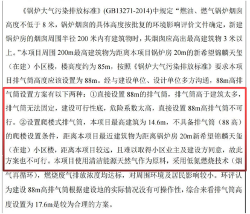

1 选址问题探究
1.1 防火间距不符合国标要求
GB50183中明确规定了天然气站场的等级划分标准以及对应的防火安全距离标准，西安高新区中央创新区6#能源站的选址严重违反国标要求。
1.1.1 站场等级划分
西安高新区中央创新区6#能源站自身配备3台70MW燃气热水锅炉，并配备有专属燃气调压站。以市面上的某款产品为例，一台70MW燃气热水锅炉其相关参数如表1所示：
表1 某型70MW燃气锅炉额定参数
额定项 | 热功率 (MW) | 出水压力 (MPa) | 轻柴油耗油量 (kg/h) | 天然气 耗气量 (Nm³/h) | 城市煤气 (Nm³/h) | 焦炉煤气 (Nm³/h) |
参数 | 70 | 1.6 | 6500 | 7500 | 14840 | 14032 |
上表中，Nm³/h其完整定义是：名义工况下立方米每小时，是在标准大气压力（1大气压，即101.325KPa）、标准温度（0℃，即273.15K°）、相对湿度0%环境下的流量。由于实际中为燃气锅炉供气的设备，其工况与当地海拔高度及温度有关，实际消耗燃气量以m³/h计量。
用于表示天然气耗气量的两种单位Nm³/h及m³/h的换算关系为：
式中，表示第i种工况下的工作压力；表示第i种工况下的流量；表示第i种工况下的温度。即标准工况，即实际工况。
由上式，可得实际工况下的天然气耗气量可表示为
实际工况中，西安地区平均海拔高度397米，地面年平均大气压力为96.99KPa，工作温度以冬天室内控制温度26℃，即299.15 K°计，代入上式可得：
则3台70MW日消耗燃气量为：
根据GB50183中第3.2.3章节的规定，天然气站场应按下表中的标准划分等级：
表2 天然气站场等级划分
等级 | 天然气处理厂规模 Q( | 天然气脱水站 脱硫站规模Q( | 天然气压气站注气站规模Q( | 集气站 输气站规模Q( |
一级 | - | - | - | |
二级 | - | - | ||
三级 | - | - | ||
四级 |
| - | ||
五级 |
|
| 任何规模 |
据此，西安高新区中央创新区6#能源站仅考虑三台70MW燃气锅炉，即可达到四级天然气站场标准。此外，考虑6#能源站东侧配套调压站，此项目为四级天然气处理厂与四级天然气压气站集成项目。
1.1.2 防火间距要求
根据GB50183中4.0.8章节的规定，天然气站场的区域防火间距应按下表执行：
表3 天然气站场的区域防火间距（m）
对于燃气锅炉，70MW功率等效于100蒸吨，即每小时蒸发量为100吨。查阅市面上主流型号燃气锅炉的相关资料，100蒸吨的燃气锅炉其工作压力均在4-5.4MPa之间。
据此，西安高新区中央创新区6#能源站应距100人及以上的居住区保持至少90m的安全防火距离。
1.1.3 实际间距
使用无人机对西安高新区中央创新区6#能源站周边环境进行航拍，航拍影像见下图，实测该能源站与小区边界仅相距12米。
图1 6#能源站与邻近居民小区仅12米
比较实际间距与GB50183中的防火间距要求，该能源站选址严重违反国标要求，存在严重危害人民群众生命财产安全的重大隐患。
1.2 排放废气不符合国标要求
6#能源站项目规划6个烟囱，其摆放位置如下图所示，其高度为伸出17.6m，远低于北侧12m的26层居民楼。
图2 排放废气烟囱位置示意图
根据国标《大气污染物综合排放标准》（GB16297-1996）要求，当烟囱高度不能满足要求时，排放速率应该严格按照标准值50%执行。本项目的氮氧化物等排放速率不满足要求，如下图所示，据此需要重新评估项目可行性。
图3 环评报告中的超标项之一
1.3 燃气爆炸极端危险隐患
该能源站周边居民小区，医院，地铁环绕，具体位置见航拍图：
图4 6#能源站周边环境航拍图
图中红线为北侧12m的住宅小区，黄线为南侧40m为大型三甲医院，绿线为西侧50m地下的西安市地铁6号线。
西安高新区中央创新区6#能源站属重大危险源，目前已有的重大危险源分级方法主要包括：“死亡半径法”、“易燃、易爆、有毒重大危险源评价法”和“人口密度法”等。
依照人口密度法，可对重大危险源进行如下分级
表4 重大危险源分级
重大危险源等级 | 分级依据 |
可能造成死亡人数 | |
一级 | 30人（含30）人以上 |
二级 | 10~29人 |
三级 | 3~9人 |
四级 | 1~2人 |
依据国家安全生产监督管理总局于2005年下发的《关于规范重大危险源监督与管理工作的通知》，一级重大危险源属于可能造成特别重大事故的一级重大危险源。
本节将通过相关模型估算6#能源站爆炸致死半径，得出该能源站属一级重大危险源的结论，并通过分析近期全国范围内燃气爆炸案例，进一步诠释该能源站的重大燃爆危险隐患。为避免造成人民群众生命财产安全特大损失，建议相关方重新评估选址方案。
1.3.1 6#能源站爆炸致死半径
根据中国石油塔里木油田公司油气运销部的相关文献，输气管道着火爆炸模型评价结果如下：
表5 输气管道爆炸模型评价结果
序号 | 运行压力 (MPa) | 运行平均温度 (℃) | 死亡半径(m) | 重伤半径(m) | 轻伤半径(m) |
1 | 6.5 | 20 | 71.94 | 174 | 312.63 |
2 | 6.3 | 20 | 54.19 | 134.79 | 242.19 |
3 | 3.2 | 23 | 24.32 | 65.5 | 117.69 |
4 | 6.1 | 25 | 53.38 | 132.97 | 238.93 |
5 | 6.4 | 30 | 54.41 | 135.29 | 243.1 |
6 | 6.1 | 20 | 30.27 | 79.76 | 143.31 |
仅以输气管道爆炸模型估算，6#能源站的致死半径在40m左右，重伤半径在100m左右。在致死半径内，有新希望锦麟天玺小区2、3、4三栋居民楼，共312户，以每户3人计，即936人。在重伤半径内，有新希望2、3、4、5、6等楼栋，南侧大型三甲医院的康复疗养楼以及西侧的地铁6号线。一旦爆炸，将造成数千人死亡及重伤的严重后果。若进一步考虑该项目配套的燃气调压站，其爆炸范围会进一步扩大。
1.3.2 全国近年来部分燃气爆炸案例
近年来，全国范围内时常有天然气燃爆事件发生，更是在近一个月中发生了多起天然气爆炸事件。
2017年3月25日，内蒙古包头市一居民楼天然气管道爆炸，造成5人死亡。
2021年6月13日，湖北省十堰市张湾区艳湖小区的天然气爆炸事故，造成25人死亡、138人受伤。
2022年6月21日，泰安市绿地公馆一层的一门头房因液化气罐泄露引发爆炸事故，造成3死10伤。
2022年6月21日，天津市宝坻区北城东路与吴苏路交口附近，因违规施工造成燃气泄漏，引发燃爆事故，导致23人受伤。
纵观全国，未发现有同6#能源站一样，距离居民小区如此之近的大型燃气能源站，若其发生爆炸，将造成比所有以往燃气爆炸事件都严重的灾难性后果。
2 违法违规乱象
2.1 未批先建
目前，该项目已施工2个月有余，已完成土方作业，完成基坑挖掘。此项目施工牌上为“锦麟天钻院二标段（6#能源站）”，但“锦麟天钻院：为居民小区建设备案名称，何时成为了能源站建设项目？此外，该项目同时又以“西安高新区中央创新区6#能源站项目”之名，实施环评等环节。同一个项目，竟能挂靠两个项目名称，线上线下同时推进项目进展。
2.2 暂停审批后违规行为
2.2.1 暂停审批后违规施工
在该项目环评报告公示期间，周边居民于2022年7月1日向高新管委会、审批局、规划局、城管局等相关部门提出异议，在审批局明确回复已暂停该项目审批、城管局到达现场叫停的前提下，该项目依旧在进行白天伪装，夜间施工的掩耳盗铃行为。2022年7月10日，其仍在进行项目外墙围栏等建设，如下图所示，工人正在进行施工。
图5 违规施工图1
图6 违规施工图2
2.2.2 暂停审批后违规招标
审批局在接收到大量投诉后，已暂停审批，但西安高新区城市客厅开发建设有限责任公司依旧不受影响，仍进行相关招标等工作。
图7 违规招标
2.3 规划局应付式回复
高新区管委会12345平台在接收到大量周边居民投诉后，对居民诉求进行回复，承认环评不合规，但未正面回复其造假问题。此外，关于该项目的位置规划，不作任何解释说明，不召集民众参与相关会议，直接拍板，宣称其符合城市规划的回复。
图8 规划局“一句话式”回复
2.4 环评造假且不合标准
该环评报告编制日期为2022年6月，此时新希望锦麟天玺项目主体建筑已封顶半年，该环评报告中却称，该项目所在地为一片空地，不存在环境影响问题。相关支撑见下图
图9 环评报告作假
此外，该项目环评报告中的相关描述更是令人大跌眼镜。在报告中称：锅炉北侧20m的居民楼距离本项目较远！并且在排放物浓度影响和噪音影响评估中，直接忽略距其最近的居民小区，未将此居民小区纳为环境保护对象。

图10 环评报告睁眼说瞎话
2.5 陕鼓能源岛与6#能源站选址对比
高新管委会下属的西安高新区城市客厅开发建设有限责任公司与陕西鼓风机（集团）有限公司出资成立西安中创区综合能源股份有限公司，负责城市客厅区域综合能源项目。
陕鼓公司在西安市临潼区自建能源岛项目，大力推广其智慧能源概念，其能源岛项目周边环境如下图，周围均为丛林，空地，无居民楼等建筑。

图11 陕鼓能源岛项目区位图
但其参与的6#能源站项目为何在西安市高新区就能划在居民楼，医院和地铁中间了呢？
2.6 未进行安评、稳评
依据国家相关规定，此类项目应进行完备的安评，环评以及稳评等相关流程，且安评应在环评之前进行，但目前在网上公开信息中查询不到关于安评的任何公示信息。
民众有权利要求相关方公示安评、稳评信息。另外，相关的公众满意度测评具有一票否决权，希望有关部门能充分听取民众意见，健全管理，莫不要因粗心大意缺少必要环节，周边数千民众会行使公民的监督权，帮助有关部门一起查漏补缺，及时纠错，早日迁址。
3 违背国家要求
3.1 违背中央指示
安全生产事关人民福祉，事关经济发展大局。党的十八大以来，习近平总书记高度重视安全生产工作，做出一系列关于安全生产的重要论述、一再强调要统筹发展和安全。
2013年，总书记就做好安全生产工作作出重要指示：人命关天，发展决不能以牺牲人的生命为代价。这必须作为一条不可逾越的红线。
2013年11月，总书记在青岛黄岛经济开发区考察输油管线泄漏引发燃爆事故抢险工作时指出：要做到“一厂出事故、万厂受教育，一地有隐患，全国受警示”。
2017年2月，总书记主持召开国家安全工作座谈会强调：要加强交通运输、消防、危险化学品等重点领域安全生产管理，遏制重大事故的发生。
2019年11月，总书记在中央政治局第十九次集体学习时强调：各级党委和政府要切实担负起“促一方发展、保一方平安”的政治责任，严格落实责任制。
要健全风险防范化解机制，坚持从源头上防范化解重大安全风险，真正把问题解决在萌芽之时，成灾之前。
2020年4月，总书记对安全生产做出重要指示强调：生命重于泰山。各级党委和政府务必把安全生产摆到重要位置，树牢安全发展理念，绝不只重发展不顾安全，更不能将其视作无关痛痒的事，搞形式主义、官僚主义。
6#能源站的选址，存在诸多不合理之处，并且存在重大安全隐患。希望西安市高新区相关部门牢记习近平总书记以上的讲话精神，按照总书记所说的“让人民生活幸福才是“国之大者”、江山就是人民，人民就是江山”的理念，从落实总书记三次来陕视察重要讲话重要指示精神和高新三期发展的政治高度从速解决这一问题，为二十大顺利召开营造良好和谐的喜庆气氛。
3.2 燃气安全“百日行动”
2022年7月4日下午，国务院安委办在京召开全国燃气安全防范专题视频会议。为认真贯彻落实习近平总书记关于安全生产的重要指示精神，坚决遏制燃气事故多发频发势头，根据国务院安委会部署要求，国务院安委办、应急管理部、住房城乡建设部、市场监管总局决定从即日起至10月底开展燃气安全“百日行动”。
会议强调，要深刻汲取近期燃气事故教训，进一步统一思想和行动，集中力量迅速开展燃气安全“百日行动”，采取坚决有力措施，尽快扭转事故多发势头，以实际行动迎接党的二十大胜利召开。
会议强调，统一思想、统一行动，立即开展燃气安全“百日行动”。要切实提高政治站位，切实把思想和行动统一到习近平总书记重要指示精神上来，深刻认识抓好燃气安全工作的重要性、紧迫性，扎实开展燃气安全“百日行动”，尽快扭转事故多发的被动局面，为保持“三个环境”作出应有贡献。要统一组织集中行动，此次行动由地方党委政府统一领导、安委会牵头组织，住建、市场、商务、公安、交通、消防等各有关部门充分调动力量，明晰各部门责任，集中开展统一行动。落细落实整治工作，注重发挥专家作用，组织工作组分片包干、分工负责。
会议要求，狠抓工作落实，确保取得实实在在的成效。要加强督导检查，地方党委政府和安委会领导要深入基层实地检查，及时协调解决工作中的难题。各有关部门要采取多种方式进行督导督查，全面排查风险隐患。
4 总结
本文通过查询国标及相关论文，计算评估西安高新区中央创新区6#能源站的等级及爆炸影响，从多个维度阐述了该项目目前的选址问题，以期为规划局等部门提供重新选址依据。同时，身为一名公民，就该项目目前存在的违法违规乱象进行了相关探索，并提出多项质疑，希望能够引起纪委等部门注意，切实解决百姓疑虑。最后，学习习近平总书记为代表的党中央及国家层面的相关指示精神，希望有关部门能贯彻落实总书记讲话精神，站在人民群众的角度想问题，把重大风险隐患当成事故来对待，坚持人民至上、生命至上，把保护人民生命安全摆在首位。
参考文献：
《石油天然气工程设计防火规范》（GB50183）
《大气污染物综合排放标准》（GB16297-1996）
《关于规范重大危险源监督与管理工作的通知》（2005）
《燃气安全“百日行动》（2022）
《习近平谈治国理政》第四卷